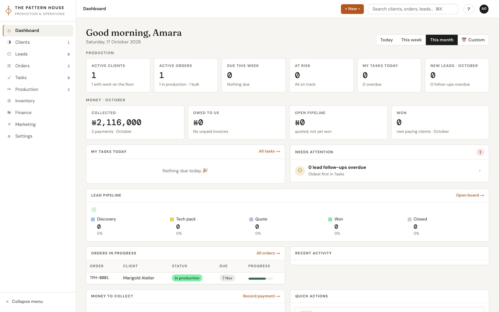
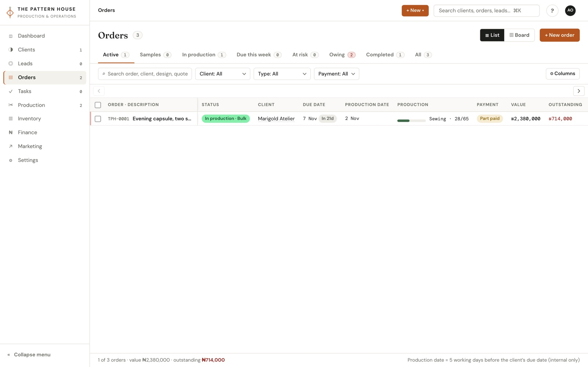
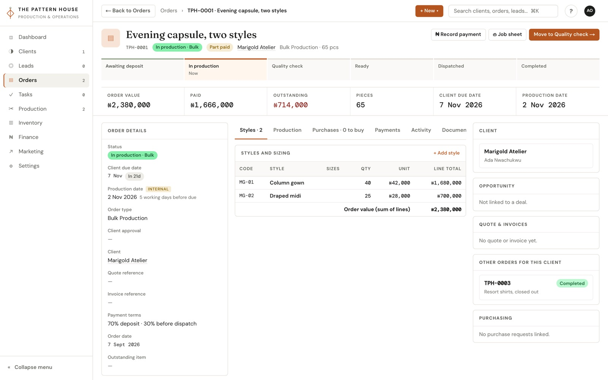
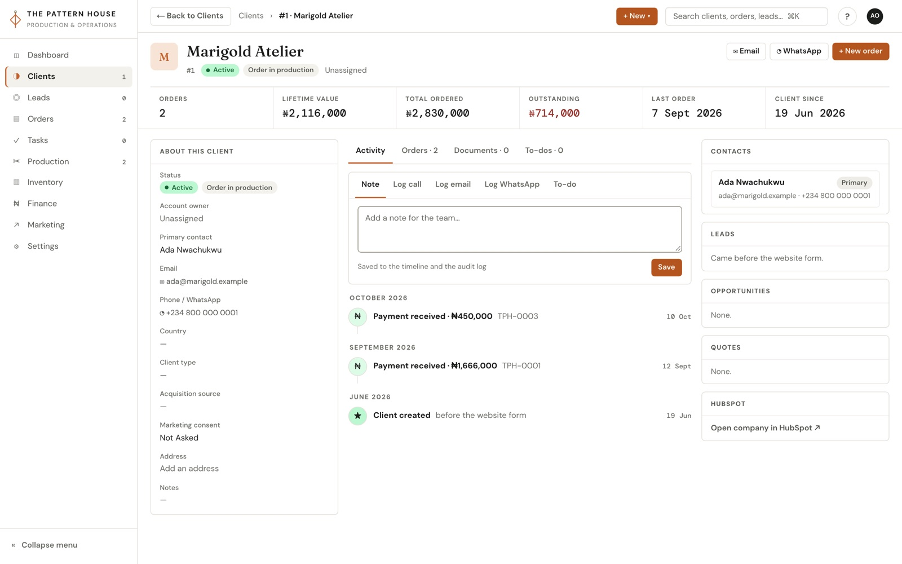
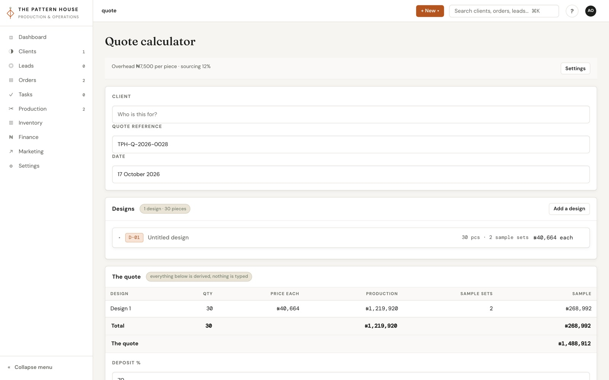
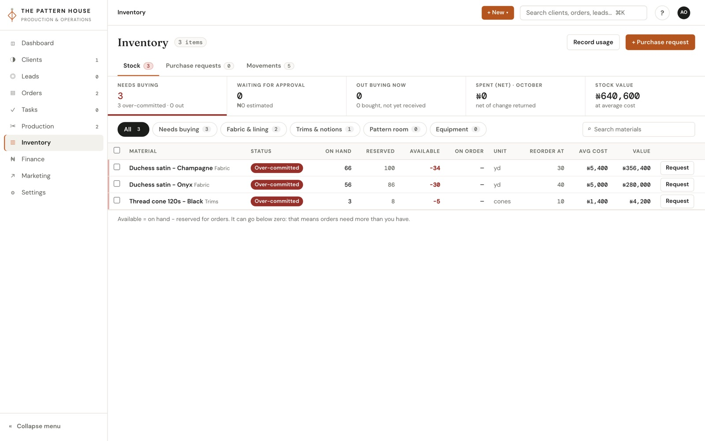
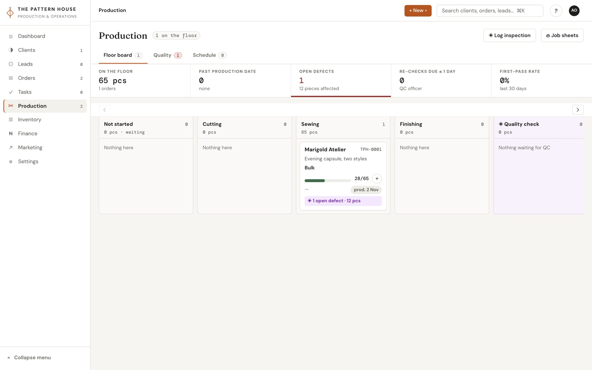
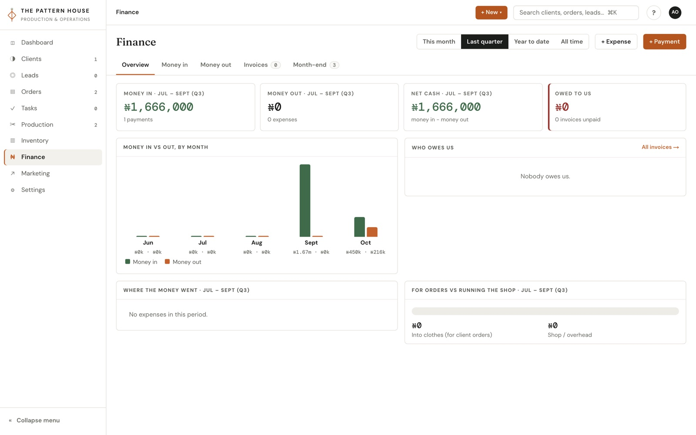
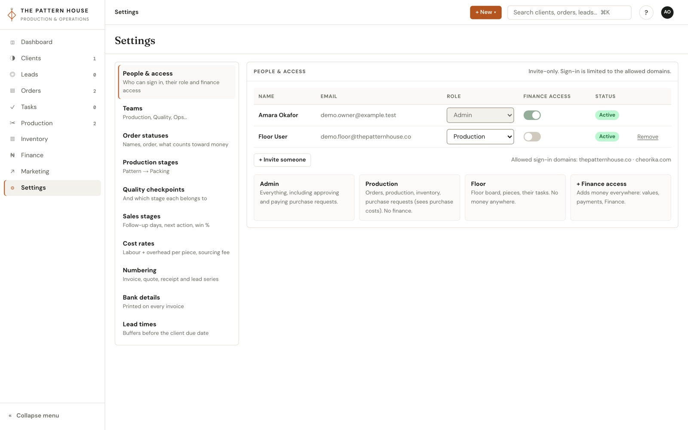

TPH Operations Platform
The system that runs The Pattern House factory floor and its books. One platform now carries a job from the first inquiry through quote, invoice, payment, production, quality control, stock, and the monthly close. I wrote the decision records, designed the money and inventory rules, ran the build with an AI engineering team, and took it from an empty repository to production in three weeks.

The website was bringing in qualified inquiries, but everything after the inquiry lived in a spreadsheet, a separate quote calculator, a CRM, WhatsApp threads, and paper receipts. None of them agreed with each other.
That gap was not cosmetic. When we traced the numbers by hand, quotes turned out to be structurally underpriced: overhead was spread across a monthly volume the studio had never actually reached, and materials carried no margin at all. Stock was bought at the market against handwritten lists, and a running total typed into a cell had already caused an over-purchase. The studio could not answer "what is this order really making us" without a day of reconciliation.
I treated arithmetic as the product. Before a screen was designed, I wrote a binding decision record for how inventory and money behave, so every engineer built against the same rules.
- Derive, never store. On-hand, reserved, available, and incoming stock are calculated on read from an immutable ledger. A stored total is exactly what had caused the over-purchase, so I banned it at review.
- Model how the studio actually works, not how software usually assumes. Buying is a purchase request that production raises, an admin approves and pays, someone buys at the market with a receipt photo, and stock is received against the order. There is no supplier module, because the studio has no suppliers in that sense.
- Statuses are data with behaviour flags. Whether a status reserves stock or counts toward money is a flag on the row, never its name, so renaming a status in Settings cannot silently break the stock maths.
- A lead becomes a client at the first payment, in the same transaction that opens the order and records the receipt. Quotes stay editable under the same number until money lands against them.








- A sales layer with leads, a staged deal pipeline, contact history, and clients, replacing the spreadsheet and the CRM pipeline as the studio's system of record.
- Quotes, invoices, and receipts on one numbering series, each rendering to a one-page A4 PDF. An invoice can be raised on a lead for a sample fee, and paying it converts the lead.
- Orders with sample and bulk legs, a production plan per order, step plans, drag-to-replan lines, and printable job sheets.
- Quality control with inspections tied to the exact style, defects, and rework that stays open until it is closed.
- Inventory and purchasing as one section, with an over-commit alarm that lets available stock go negative on purpose so a shortage is visible before it becomes a late order.
- Finance with payments, refunds, an audited order adjustment, and a monthly close that refuses edits once a month is closed.
- A Marketing section that syncs GA4, Search Console, and Microsoft Clarity four times a day, plus first-party events beaconed from the public website, so lead sources sit next to the deals they produced.
- People, roles, and an owner-only test-data purge that deletes a demo chain in one transaction and leaves a single audit event behind.
- Gate money on the read, not the button. Three fixed roles, Admin, Production, and Floor, plus a separate finance-access flag. Order value, payments, quotes, and margin are stripped from server responses for anyone without it. Production is allowed to see and enter purchase costs, because they do the buying, and nothing else.
- Derive dates the client must never see. The production deadline is five working days before the client's due date, calculated on the server from the one stored date. It is never a second stored field and never a front-end subtraction.
- Every write is audited by construction. All mutations go through one wrapper that writes the audit event inside the same transaction, and a CI guard fails the build if a write sneaks around it.
- Copy proven layouts, not code. When the first leads screen shipped without a design and fell flat, I had the team map each screen to established CRM patterns, list views, deal boards, record pages with a timeline, and rebuild on permissively licensed components with the studio's own look.
- Spend nothing new on infrastructure. The platform runs as a second project inside the existing hosting team, with its own Postgres database in a separate account and functions pinned to the region next to the database. Incremental cost: zero per month.
Cutting over from the spreadsheet. The sheet held every lead, deal, contact, order, and receipt since the studio opened, with duplicates, a template row posing as a real receipt, and totals that had drifted from the line items. I would not switch the studio over on an import that was "close".
We wrote the import as a rehearsed script that had to reconcile every receipt to the kobo before it was allowed to touch production, ran it against copies until it passed with zero stops, froze the sheet, took a database backup, migrated, imported, and released in one window. Every lead, deal, contact, client, order, and receipt came across and verified one to one. The sheet is now read-only history.
The platform went live on 21 September 2026, three weeks after the first commit, and went to production sixteen times in its first four weeks. Over 250 pull requests have merged, each through a review gate and a release checklist. The factory now quotes, invoices, plans, inspects, buys, and closes the month in one place, and the question "what is this order really making us" has an answer on the screen instead of in a spreadsheet.
Green ticks are not evidence. At the first user acceptance round, more than three hundred unit tests were passing and the floor still found 33 problems, because nothing could click a button and the CI pipeline was not even running the tests. We added a real production build and Playwright journeys against the deployed staging app, and discovered that a quarter of the test files were checking that the code looked right rather than that it worked. Now I ask what a test actually exercises before I count it.